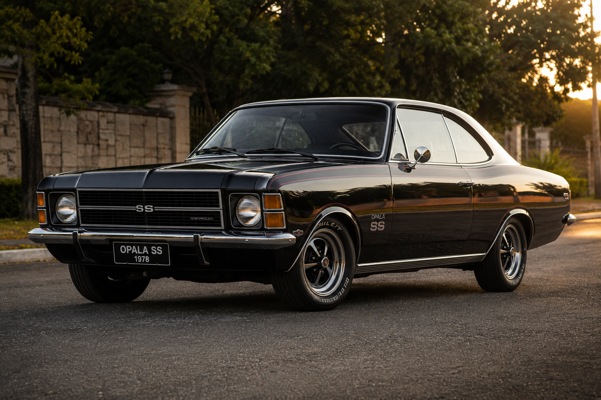
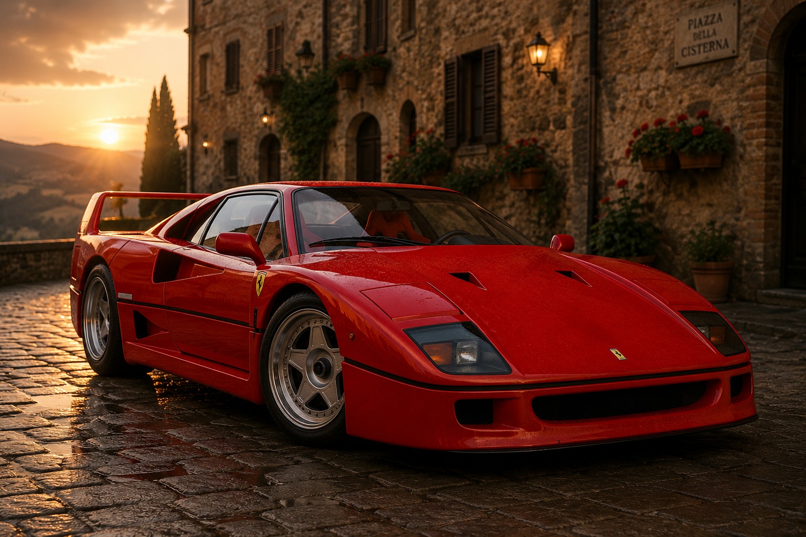
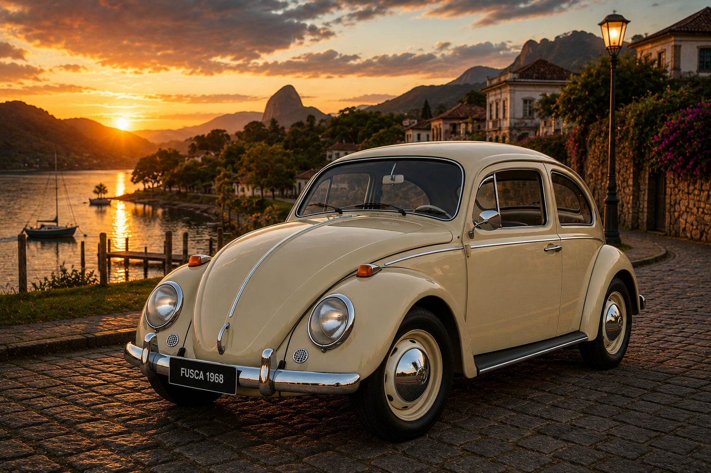
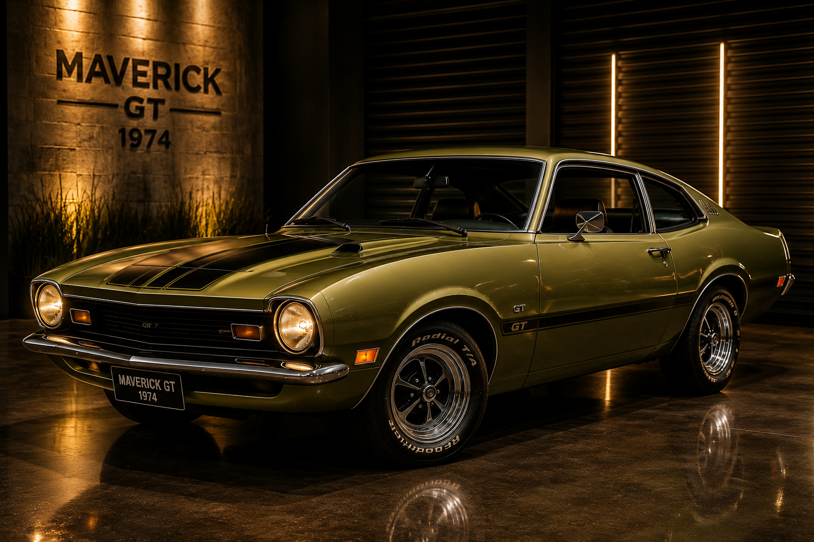
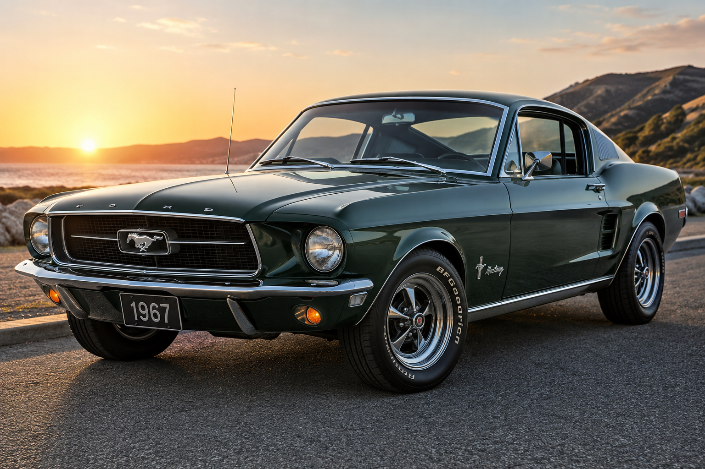
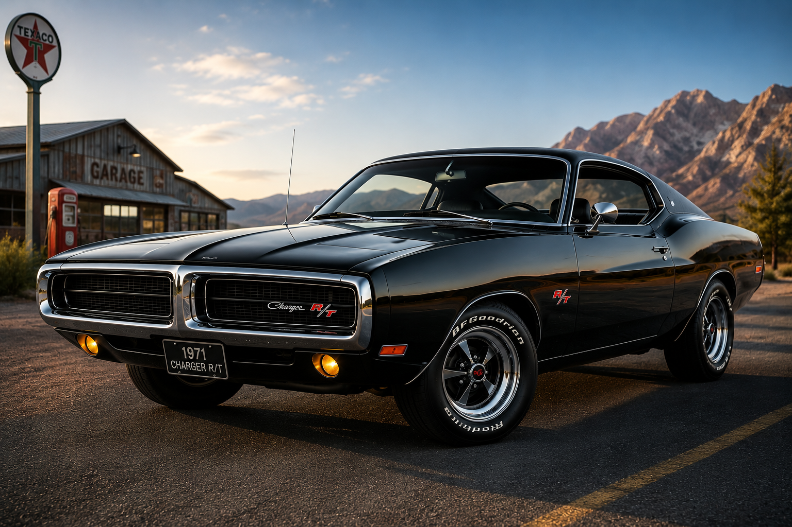
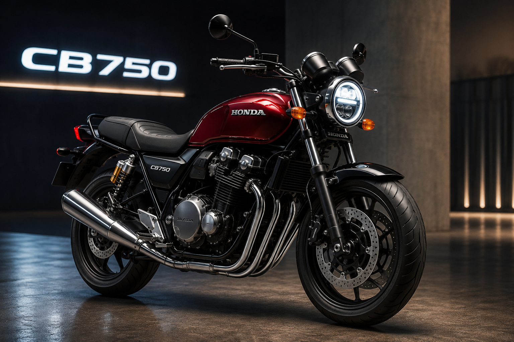
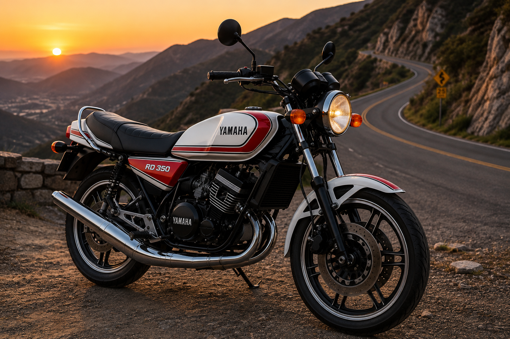
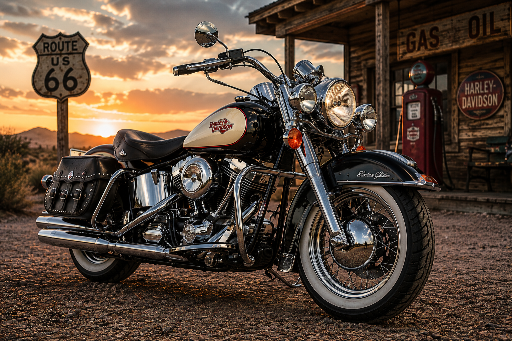
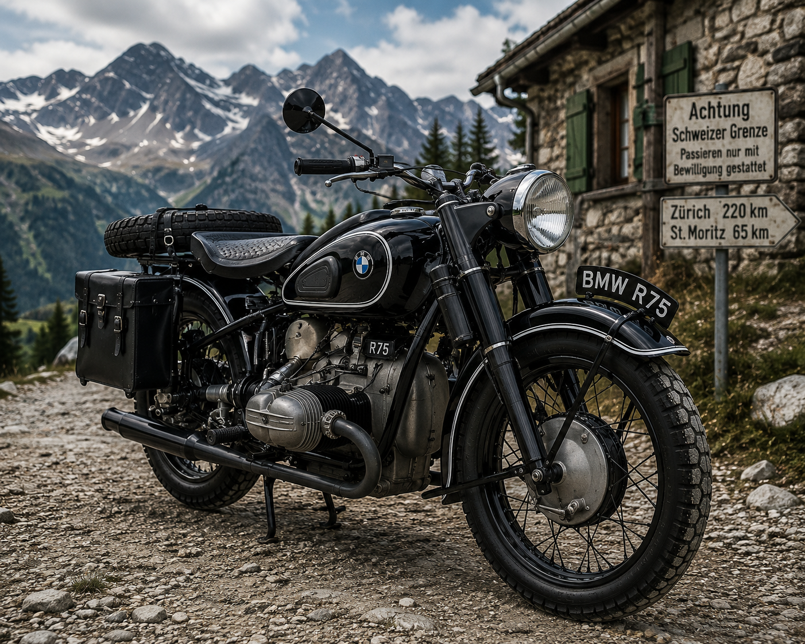

Muscle clássico
Opala SS 1978
Ano: 1978
Um dos maiores ícones da Chevrolet brasileira.
Coleção clássica
Explore carros clássicos, motos antigas e veículos históricos que fazem parte da experiência premium do Old-Wheels.
Uma seleção inspirada nos maiores clássicos automotivos de diferentes épocas.

Galeria de carros
Modelos clássicos restaurados e preservados com visual elegante e histórico.

Ano: 1978
Um dos maiores ícones da Chevrolet brasileira.

Ano: 1977
Compacto clássico conhecido pelo visual marcante.

Ano: 1968
Um dos carros mais famosos da história automotiva.

Ano: 1974
Modelo esportivo admirado por colecionadores.

Ano: 1967
Referência mundial em potência e design clássico.

Ano: 1971
Modelo lendário com visual agressivo e histórico.
Motos clássicas

Modelo revolucionário conhecido pela confiabilidade.

Moto famosa pelo desempenho agressivo.

Símbolo de liberdade e tradição no motociclismo.

Modelo histórico com design robusto e clássico.
Veículo Destaque
O Opala SS 1978 representa uma das fases mais marcantes do automobilismo brasileiro.
Esse formulário é apenas demonstrativo para a galeria Old Wheels.